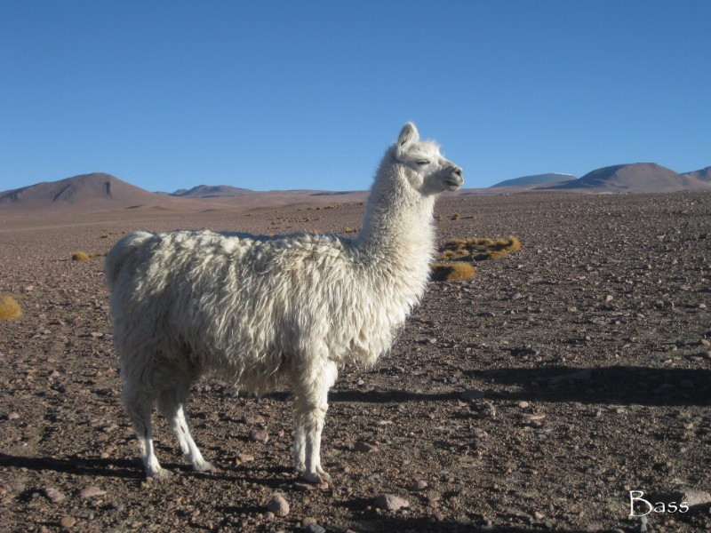
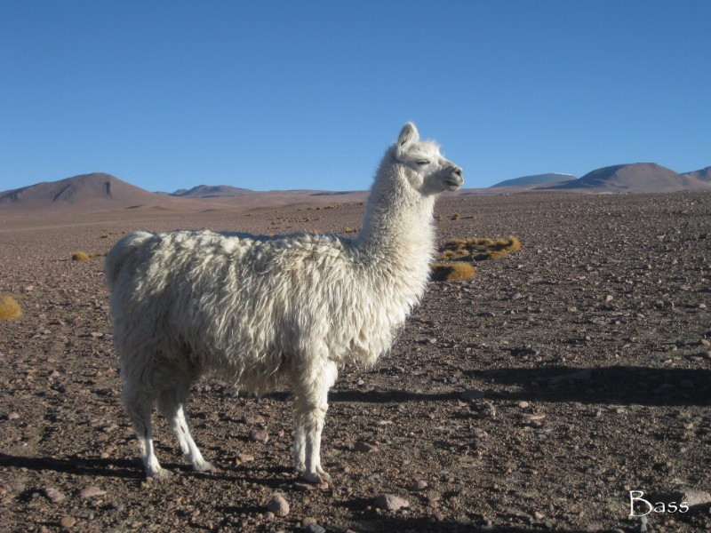
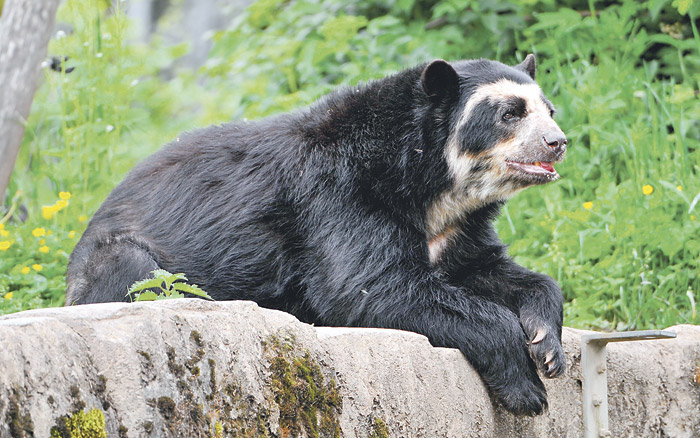
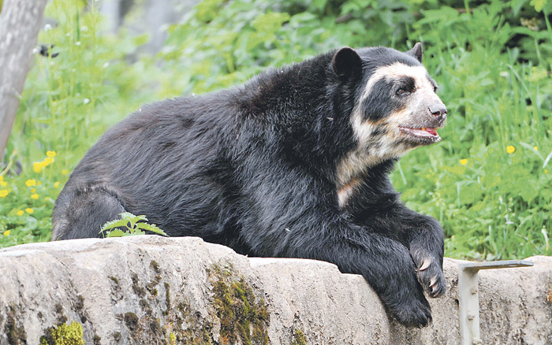

 


Restringida a hábitats rocosos escasamente vegetados, desde 2,500 metros hasta 5,100 metros sobre el nivel del mar.
Durante el día, la vizcacha emerge de las hendiduras y grietas que coloniza, para buscar comida y disfrutar de las percas rocosas al sol. Corre y salta entre las rocas con increíble agilidad, y se alimenta de una gran variedad de plantas que incluyen hierbas, musgos y líquenes.
Como todas las viscachas de montaña, la vizcacha es una especie gregaria que forma colonias de pequeñas a muy grandes, que comprenden uno o más grupos familiares. El momento de la temporada de cría no está documentado para esta especie, pero el período de gestación se ha estimado en 120 a 140 días, con solo un joven nacido a la vez. La cría nace completamente peluda con los ojos abiertos, y normalmente se desteta después de ocho semanas, y alcanza la madurez sexual alrededor de un año.
Clasificado como Preocupación Menor (LC) en la Lista Roja de la UICN.
Aunque la vizcacha es cazada localmente por su carne y su pelaje, sigue siendo una especie muy común, y no se cree que esté disminuyendo a un ritmo que justifique una preocupación importante.